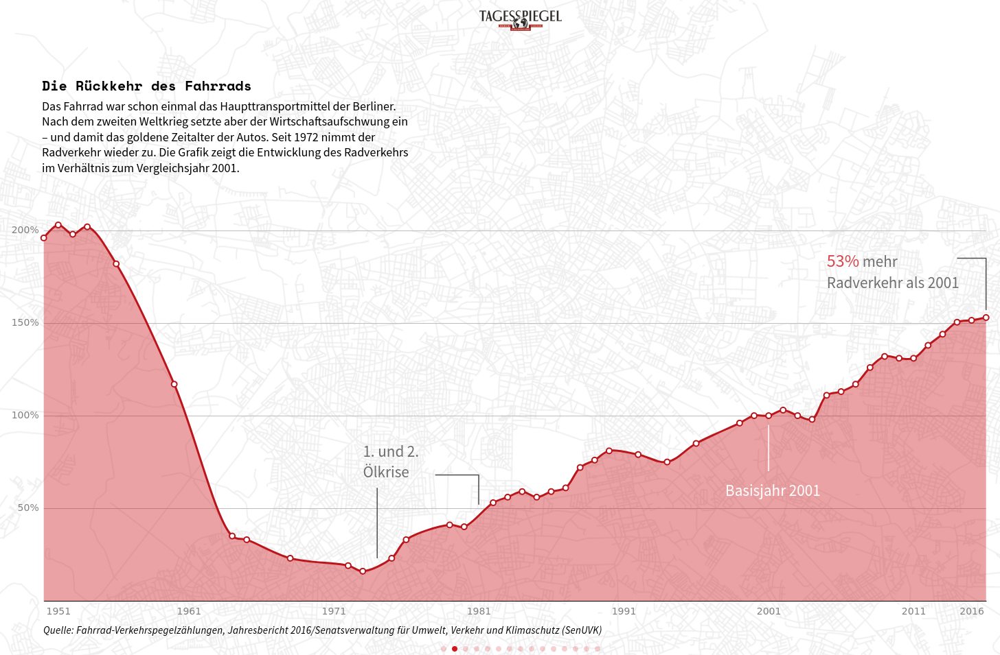
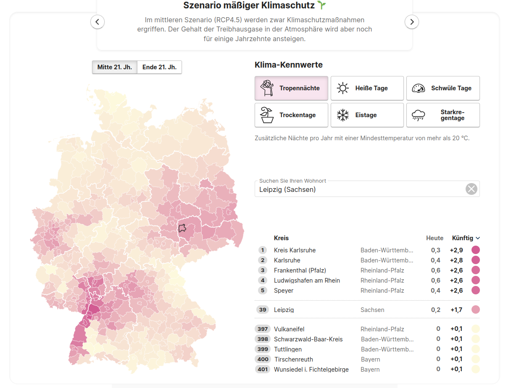
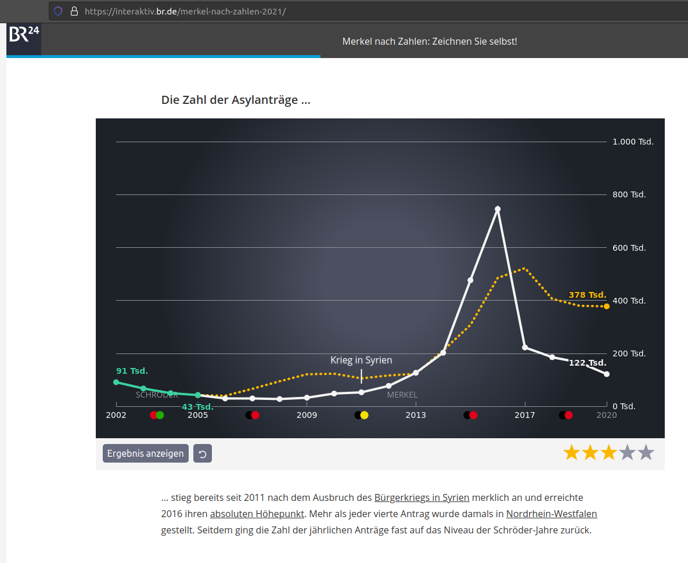
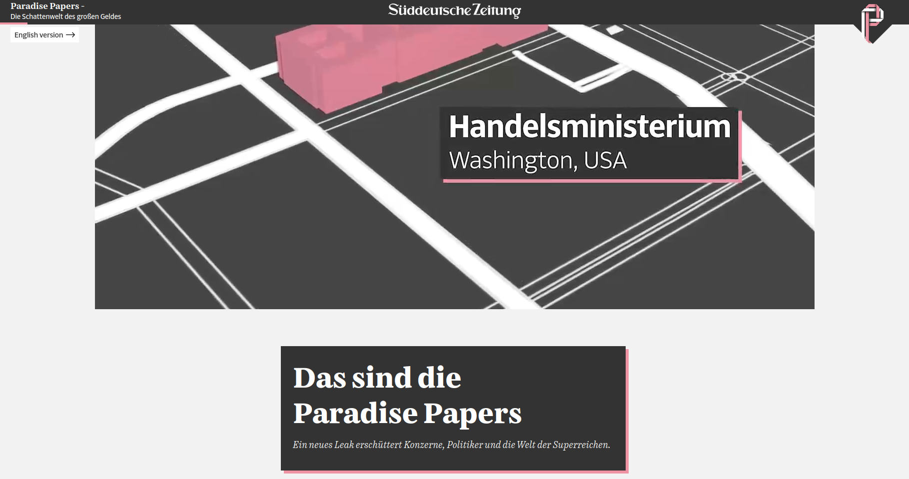
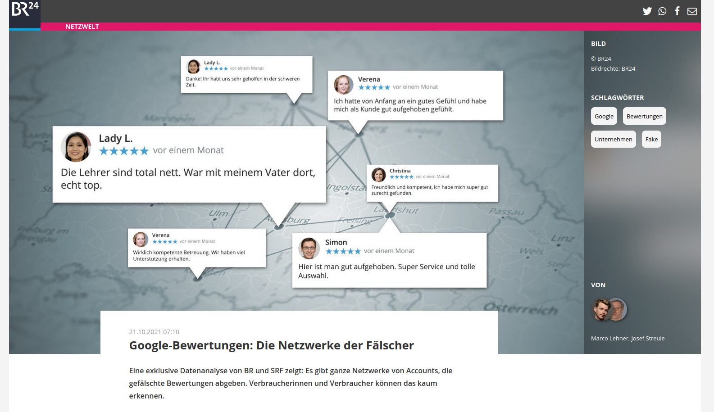
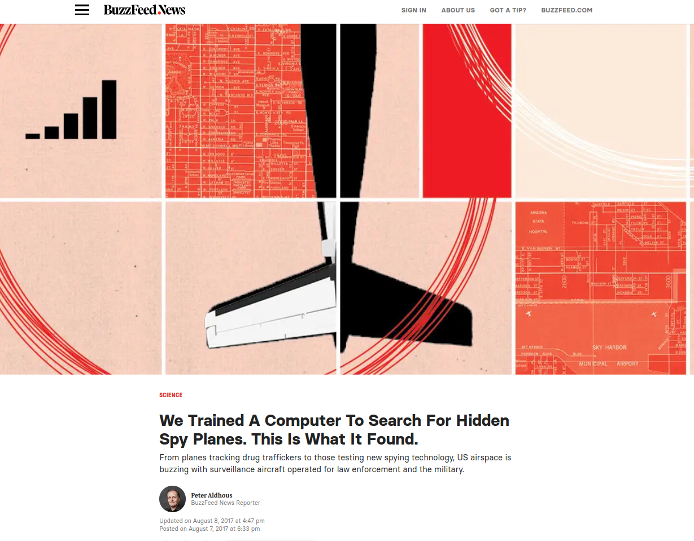
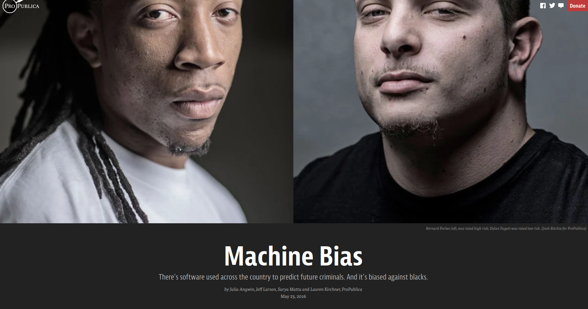
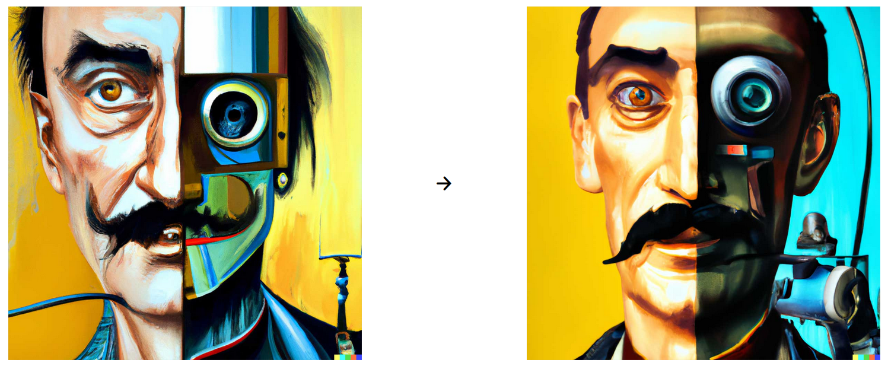

Motivation
Contents
Motivation#
Warum ist Programmieren überhaupt relevant für angehende Journalist:innen?
Gründe dafür gibt es viele - und auch sehr unterschiedliche. Auch wenn man selbst nicht im Datenjournalismus arbeiten möchte, lohnt es sich die Grundlagen einer Programmiersprache zu beherrschen.
Daten als Grundlage für Journalismus#
Journalismus basiert fast immer auf Daten. Manchmal sind es nur einzelne Zahlen. Aber immer öfter helfen uns Daten:
Trends zu verstehen
Dimensionen greifbar zu machen
Ereignisse in Kontext zu setzen
in Interaktion mit Leser:innen zu treten



Daten, Daten, Daten#
Manchmal ist die Datenflut so überwältigend, dass Recherchen nur mit technischen Mitteln möglich sind.
Paradise Paper#
21 verschiedene Datenquellen
ca. 13,4 Millionen Dokumente oder 1,4 Terrabyte an Daten
mehr als 380 Journalist:innen aus 67 Ländern

Direkte Auswertung & Schnelles Prototyping#
Selbst in einem Team mit Entwickler:innen ist es von Vorteili für Journalist:innen die Grundlagen der Programmierung zu beherrschen um schnell Ideen auszuprobieren, Stichprobendaten zu untersuchen, kleine Prototypen zu basten und so das Team von einer Idee zu begeistern.
Digitale Produktentwicklung#
In der digitalen Produktentwicklung sind Programmierkenntnisse hilfreich um Aufwände abzuschätzen und eine gemeinsame Sprache mit Entwickler:innen zu sprechen.
Möglichkeiten kennen und kreativ sein#
Machinelles Lernen als Hilfsmittel in der Recherche
Algortihmischen Bias aufdecken
aktueller Stand von Deep Fake Technologie

https://interaktiv.br.de/falsche-google-bewertungen/

https://www.buzzfeednews.com/article/peteraldhous/hidden-spy-planes

https://www.propublica.org/article/machine-bias-risk-assessments-in-criminal-sentencing
